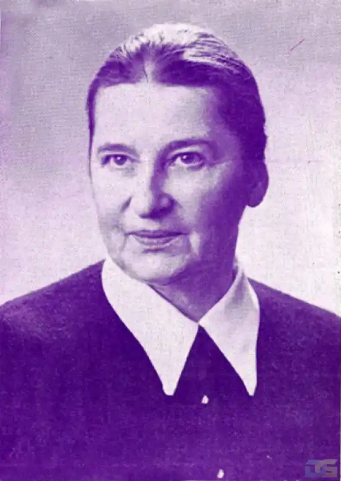

Галина ЖУРБА
(29 грудня 1888 — 9 квітня 1979)
Галина ЖУРБА (Галина Маврикіївна Домбровська, по чоловікові Нивінська) народилася 29 грудня 1888р. в поміщицькому домі на Уманщині. Вихована в польській культурі, вже з юнацьких років нав'язала зв'язок з народом і повернулася до українства, що його віднайшла по лінії маминого роду Копистинських. Писати почала ще в батьківському домі. Двадцятирічною студенткою почала і друкуватись за посередництвом літературознавця Андрія Ніковського, який підготовив і зредагував першу книжку оповідань Галини Журби "З життя", що вийшла друком в 1908р. в Одесі. До цієї книжки увійшли три оповідання: "Солов'ї", "Черешні" та "Ясний день". Рецензії на це видання написали Іван Липа й Євген Чикаленко. Журба переїхала у Київ і тут почала друкуватися в передовому на той час літературному журналі "Українська хата"; число "Української хати", в якому було надруковане оповідання Галини Журби "Коняка", підпало під цензуру. В 1919 р. вийшла друком друга збірка оповідань "Похід життя". Після визвольної війни Галина Журба разом з евакуацією уряду УНР переїхала у Польщу й опинилась у польському таборі полонених українських вояків у Тарнові, де написала сценічний етюд "Маланка", що вийшов книжковим виданням в 1921 р. Поселилась на Волині, де присвятила час поширенню освіти між селянством, а далі переїхала до Львова, де продовжувала свою літературну діяльність. У Львові у видавництві "Батьківщина" були надруковані дві повісти, що їх темою була визвольна війна, а саме "Зорі світ заповідають" (1933) і "Революція йде" (1937); за першу повість письменниця була нагороджена премією Товариства Письменників і Журналістів. Під час другої світової війни вийшов друком в Українському Видавництві сензаційний роман "Доктор Качіоні" (1943). Війна змусила письменницю емігрувати, й вона через Німеччину переїхала в Америку, де поселилась у Філядельфії. Тут, живучи дуже вбого, написала дві книжки, що стали головним здобутком її літературної праці; це автобіографічна розповідь "Далекий світ", що вийшла першим виданням в Буенос-Айресі в 1955 р., а другим в 1978 р. в Нью-Йорку, і роман на тлі історії "Тодір Сокір" (1967) як перша частина задуманої трилогії. Обі книжки — це картина життя отого "далекого світу", з якого вийшла письменниця, коли упадав старий порядок з чужим панством і селянським бунтом, і в революції творився новий світ, в якому й Україна вимагала свого місця на землі. Ці два романи виносять Галину Журбу на перше місце між еміграційними письменниками та увійдуть у класику української літератури. Галина Журба посвятила багато уваги організації ОУП "Слово", а ще активніше допомагала уможливити видання нашого письменницького збірника "Слово", для чого перевела і грошову збірку. Померла 9 квітня 1979 р. у Філядельфії. Остап ТАРНАВСЬКИЙ Українське слово. — Т. 1. — К., 1994.